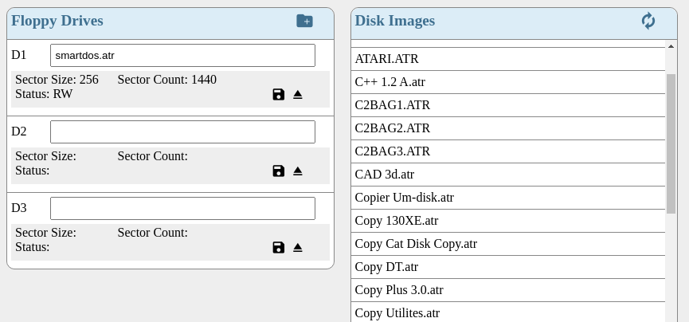
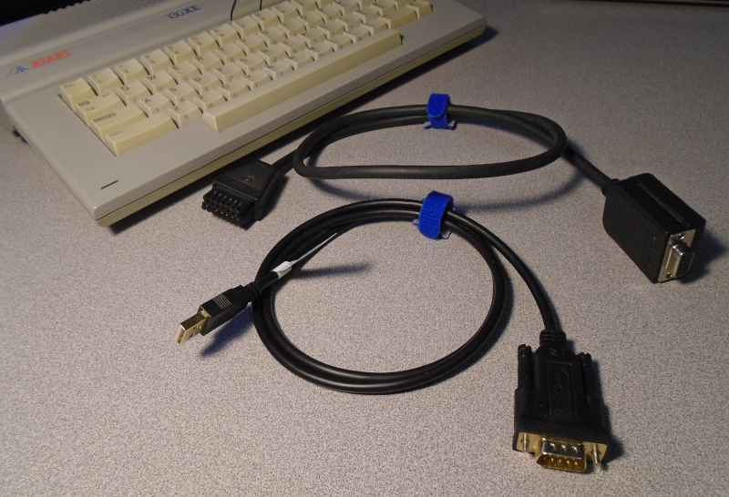
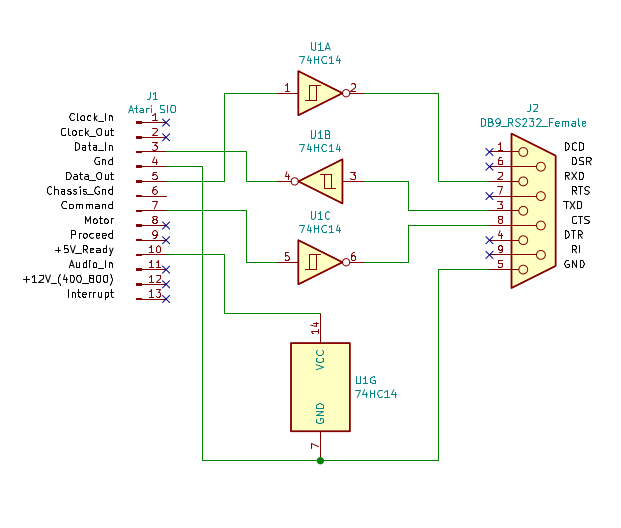

Atari introduced a line of 8-bit home computers
in 1979 which included a serial interface
that for peripheral devices including 5 1/4 inch floppy drives. Various modern
interaces have been developed to emulate the Atari floppy drives using software
on a PC and an adapter to connect an RS-232 serial port
to the Atari SIO port. The atarijs-server
is an application written for NodeJS to emulate
multiple Atari floppy drives and provide a web based interface for loading floppy
disk images into the emulated drives.
Web interface screenshot...

RS-232 to SIO Adapter
The Atari SIO signal levels are 0 and 5 volts while the RS-232 standard may be
-3 and +3 volts to -15 and +15 volts. These differences in voltage necessitate
an adapter to switch between the two voltage ranges. While the atarijs-server
application may work with any of the existing adapter designs it was developed
with a simple adapter that relies on a single 74HC14 integrated circuit and a
USB to RS-232 adapter which outputs signals at the lower range of the standard.
Atari SIO to RS-232 cable and RS-232 to USB cable..

This hardware design should be used with caution as it has not been tested
extensively. The design is simple with the Atari SIO +5 volt ready signal used
to power the 74HC14 hex inverter Schmitt trigger gates and three of the gates
used for the data transmit, data recieve, and the SIO command signal.
Schematic for 74HC14 adapter circuit...

Demonstration of atarijs-server in action...
In the following video vlc is used to capture video from an Atari 130XE connected
to a PC with the 74HC14 based RS-232 to SIO adatper. In a terminal on the PC
the atarijs-server application has been installed and is executed with the node
engine. The web interface is then loaded into the Chrome browser by opening
http://localhost:8080. The first drive is loaded with a floppy that contains
smart dos and the Atari is then booted. After smart dos is loaded a second
drive is created and another floppy is dragged into the new drive where the
Fuji Boink demo is saved. The demo is loaded and executed from the floppy.